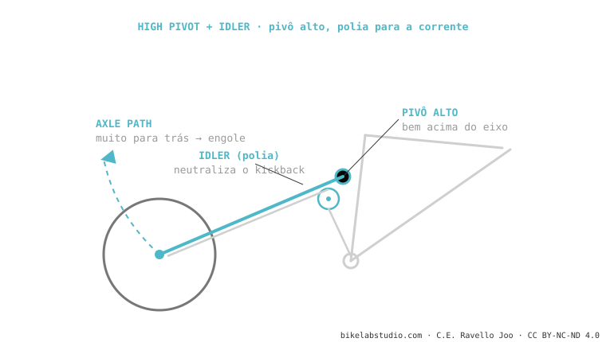

O high pivot sobe o pivô principal bem acima do movimento central, dando uma trajetória do eixo muito para trás que engole os impactos de quina viva (por isso "flutuam"). Isso gera enorme chain growth, então levam uma polia (idler) que neutraliza o pedal kickback. Brutal na descida, ao custo de atrito, peso e ruído. Usam Forbidden, Norco, Commencal. É um dos sistemas.
É o sistema da moda em enduro e DH. E todo o seu caráter vem de subir um pivô e colocar uma roda dentada na corrente.

Para neutralizar o enorme chain growth do axle path traseiro e que ele não chute seus pedais.
Não pela cinemática (anti-squat razoável com o idler bem posto). Custa atrito, peso e ruído.
Diga para que você a quer e dizemos se o acordo compensa para você. Fale conosco pelo WhatsApp
© 2026 BikeLab Studio. Conteúdo sob CC BY 4.0: você pode copiar, traduzir e publicar, inclusive com fins comerciais. A citação é obrigatória. Sem atribuição, a licença é revogada automaticamente (CC BY 4.0, §6.a) e o uso passa a ser violação de direitos autorais: solicitamos a retirada do conteúdo e sua desindexação. · Design e propriedade: Carlos Ravello Joo